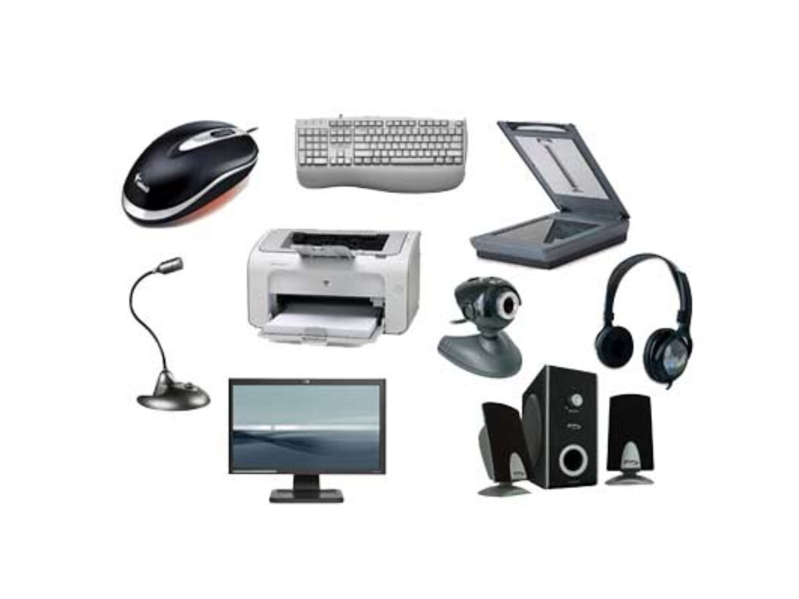

Le periferiche di input e di output
Della Ragione Stefano
Una periferica si dice di “input” quando permette di inserire dati nel computer; invece, si
dice di “output” quando permette di ricevere dei dati dal computer. Le periferiche, sia di input che di
output, possono essere interne al computer se sono fisicamente presenti nel computer oppure esterne se
connesse al computer tramite un cavo o rete. Alcuni esempi possono essere il mouse, la tastiera e il
microfono per le periferiche di input mentre il monitor, la stampante e le cuffie per le periferiche di
output.
